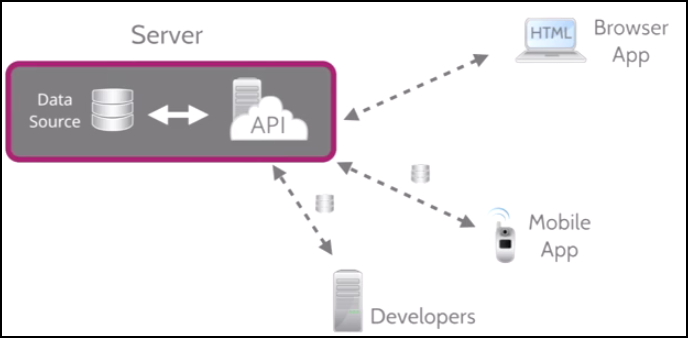
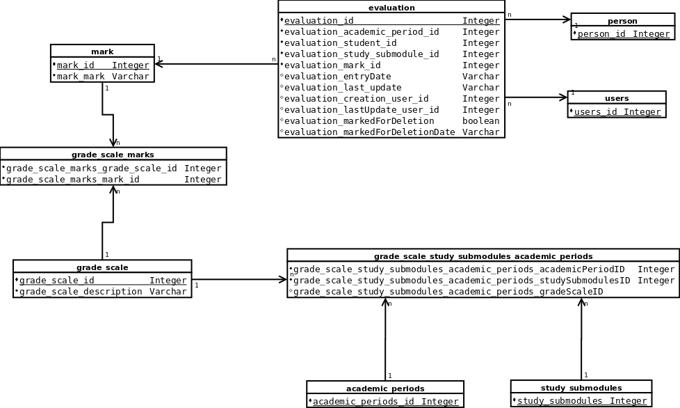

Created by Iván Roldán/Kriminal
Añadir un nuevo módulo que permita evaluar a los alumnos de cada uno de los módulos de el grado formativo.
Se tendrán que poder evaluar cada una de las diferentes unidades formativas(UF) en las que el alumno se haya matriculado.
La evaluación se debe poder hacer de la siguiente manera:
Se realiza una API aprovechando el soporte de Laravel 5
La implementación se desarrolla empleando el paradigma:
$ composer require criminal/evaluation dev-master
$ composer create-project criminal/evaluation /home/usuario_del_sistema/evaluation "dev-master"
$ cd /home/usuario/
$ git clone https://github.com/kriminal666/Evaluation
$ cd /home/usuario/Evaluation
$ composer install
app/config/database.php
Utilizamos como base la base de datos de ebre-escool
Los campos básicos de las tablas
database/migrations
Las utilizamos como generadores de las tablas nuevas en la base de datos.
Para crear una migración:
$ php artisan make:migration create_evaluation_table
$ php artisan [migrate|migrate:refresh|migrate:reset|migrate:rollback] [--seed]
database/seeds
Las utilizamos para sembrar de datos las tablas de la base de datos.
$ composer require laracasts/generators --dev
$ php artisan make:seed EvaluationTableSeeder
$ composer require fzaninotto/faker
database/seeds
La clase hereda de DataBaseSeeder
class EvaluationTableSeeder extends DatabaseSeeder
En el método run() del Seeder desactivamos la protección de los campos no fillable
Model::unguard();
En la clase DataBase seeder, realizamos la llamada al sembrador
//database/seeds/DataBaseSeeder.php
//call evaluation table seeder
$this->call('EvaluationTableSeeder');
$ php artisan db:seed [--class=EvaluationTableSeeder]
app/
Utilizados como la representación de las tablas en forma de objeto con atributos, donde los atributos son los campos de la tabla.
Generamos un modelo por cada tabla de la base de datos especificando que no genere la migración, pues ya las tenemos.
$ php artisan make:model Evaluation [--no-migration]
Es necesario definir las diferentes relaciones que existen en tre las tablas. Esto se realiza en cada uno de los modelos, creando un nuevo método por cada tipo de relación.
/**
* This belong to one user
*
* @return \Illuminate\Database\Eloquent\Relations\BelongsTo
*/
public function user()
{
return $this->belongsTo('Evaluation\User', 'evaluation_student_id');
}
/**
* This belongs to one mark
*
* @return mixed
*/
public function mark()
{
return $this->belongsTo('Evaluation\Mark', 'evaluation_mark_id')->select(array('mark_id', 'mark_value'));
}
/**
* This belongs to one study_submodules
*
* @return mixed
*/
public function studySubModules()
{
return $this->belongsto('Evaluation\StudySubmodules', 'evaluation_study_subModule_id')
->select(array('study_submodules_id', 'study_submodules_shortname', 'study_submodules_name', 'study_submodules_study_module_id'));
}
/**
* this belongs to one academic period
*
* @return mixed
*/
public function academicPeriods()
{
return $this->belongsTo('Evaluation\AcademicPeriods', 'evaluation_academic_period_id')
->select(array('academic_periods_id', 'academic_periods_name'));
}
app/Http/Controllers/ModelControllers
Son la base de la API.
Contienen los métodos de las operaciones CRUD de cada uno de los modelos.
Crearemos un controlador por cada modelo.
$ php artisan make:controller ModelControllers/EvaluationController
En el propio constructor del controlador obligamos a que el usuario que haga la petición, este autenticado, previamente.
function __construct()
{
$this->middleware('auth');
}
Además de las operaciones CRUD, poseen métodos para ejecutar consultas basadas en las relaciones entre los modelos.
Ejecución de querys con relaciones(eager-load, lazy-load, nested)
public function getGroupEvaluations()
{
$users = User::with(['evaluations'
=> function ($query) {
$query->whereHas('studysubmodules', function ($q) {
$q->where('study_submodules_study_module_id', Request::input('module'));
})->orderby('evaluation_study_subModule_id', 'ASC')->with('studysubmodules')->with('mark');
}])->find(Request::input('id'));
return $users;
app/Http/Routes.php
Laravel obliga a definir las rutas de forma manual.
Para generar las rutas de un recurso perteneciente a una API utilizamos:
Route::group(['prefix' => 'api'], function () {
Route::resource('evaluations', 'ModelControllers\EvaluationController');
});
El resto de rutas están definidas según el método
Route::get('evaluationswithTrashed', 'ModelControllers\EvaluationController@indexWithTrashed');
Route::match(array('GET', 'POST'), 'usersgroupevaluations', 'ModelControllers\UsersController@getGroupEvaluations');
| Inicial | Acrónimo | Concepto |
|---|---|---|
| S | SRP | Single responsibility principle |
| O | OCP | Open/Closed principle |
| L | LSP | Liskov substitution principle |
| I | ISP | Interface segregation principle |
| D | DIP | Dependency inversion principle |
app/Transformers/Transformer.php
abstract class Transformer
{
/**
* Transform collection
*
* @param $items
* @return array
*/
public function transformCollection(array $items)
{
return array_map([$this, 'transform'], $items);
}
/**
* @param $item
* @return mixed
*/
public abstract function transform($item);
}
/app/Transfromers/EvaluationTransformer
class EvaluationTransformer extends Transformer
{
/**
* Transform evaluation
*
* @param $evaluation
* @return array
*/
public function transform($evaluation)
{
return [
'evaluationId' => $evaluation['evaluation_id'],
'markId' => $evaluation['evaluation_mark_id'],
'academicPeriodId' => $evaluation['evaluation_academic_period_id'],
'subModuleId' => $evaluation['evaluation_study_subModule_id'],
'studentId' => $evaluation['evaluation_student_id'],
'creationDate' => $evaluation['evaluation_created_at'],
'creationUserId' => $evaluation['evaluation_creationUserId'],
'updateDate' => $evaluation['evaluation_updated_at'],
'lastUpdateUserId' => $evaluation['evaluation_lastUpdateUserId'],
'softDelete' => $evaluation['deleted_at']
];
}
}
app/Http/Controllers/ModelControllers/EvaluationController.php
class EvaluationController extends ApiController
{
/**
* @var EvaluationTransformer
*/
protected $evaluationTransformer;
/**
* Create a new controller instance.
*
* @param EvaluationTransformer $evaluationTransformer
*/
function __construct(EvaluationTransformer $evaluationTransformer)
{
$this->middleware('auth');
$this->evaluationTransformer = $evaluationTransformer;
}
'data' => $this->evaluationTransformer->transformCollection($evaluations->toArray());
app/Http/Controllers/Api/ApiController.php
class ApiController extends Controller
{
/**
* @var int
*/
protected $statusCode = 200;
/**
* @return mixed
*/
public function getStatusCode()
{
return $this->statusCode;
}
/**
*
* @param mixed $statusCode
* @return $this
*/
public function setStatusCode($statusCode)
{
$this->statusCode = $statusCode;
return $this;
}
/**
* @param string $message
*
* @return mixed
*/
public function respondNotFound($message = 'Not Found')
{
return $this->setStatusCode(IlluminateResponse::HTTP_NOT_FOUND)->respondWithError($message);
}
/**
* @param string $message
*
* @return mixed
*/
public function respondInternalError($message = 'Internal error')
{
return $this->setStatusCode(IlluminateResponse::HTTP_INTERNAL_SERVER_ERROR)->respondWithError($message);
}
/**
* @param $message
* @return mixed
*/
protected function respondCreated($message)
{
return $this->setStatusCode(IlluminateResponse::HTTP_CREATED)->respond([
'message' => $message
]);
}
/**
* @param $data
* @param array $headers
* @return mixed
*/
public function respond($data, $headers = [])
{
return Response::json($data, $this->getStatusCode(), $headers);
}
/**
* @param $message
* @return mixed
*/
public function respondWithError($message)
{
return $this->respond([
'error' => [
'message' => $message,
'status_code' => $this->getStatusCode()
]]);
}
}
class EvaluationController extends ApiController
{
public function show($id)
{
$evaluation = Evaluation::find($id);
if (!$evaluation) {
return $this->respondNotFound('Evaluation does not exists.');
}
return $this->respond([
'data' => $this->evaluationTransformer->transform($evaluation->toArray())
]);
}
A estas alturas, al desdichado que le ha tocado tratar conmigo, ya no le es desconocida mi asombrosa capacidad de agotar la paciencia.
De igual forma tampoco habrán pasado desapercibidas mis otras maravillosas cualidades, ese tono de voz suave y aterciopelado, ese saber estar preguntando tan solo lo justo y necesario, además de asentir siempre sin llevar la contraria aunque piense lo contrario a lo que escuche.
Aún a pesar de todo sigo siendo un ignorante con mucho que aprender, y debido a la frustración que siento por ello, no he podido evitar hablar en el formato "Ahí va la hostia, me cagüen la puta", tan característico de donde provengo, además de utilizar ese tono de voz que hacen retumbar las sólidas paredes de estas aulas, para saturar a preguntas a cada uno de los mencionados en el inferior.
Aún y todo, ciertas personas han soportado estóicamente este constante acoso y se ha de agradecer.
Así que mis agradecimientos a: